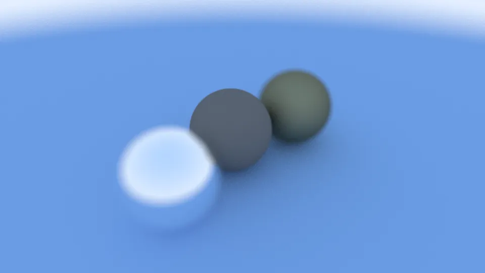

CPU Ray Tracer
C++ ray tracer built from Ray Tracing in One Weekend: Lambertian, metal and dielectric materials, multi-sample anti-aliasing and defocus blur, written out as PPM.
- Technologies
- C++14, Ray tracing, CMake
- Period
- Nov–Dec 2025
- Status
- Complete
- Directory
- Graphics and GPU Computing · Project
- Links
- Source for CPU Ray Tracer
Overview
A CPU ray tracer in C++ written while working through Ray Tracing in One Weekend. It follows the book's structure closely. Where the book's explanations were thin, mainly refraction and the thin-lens camera, I used other sources, listed in the repository. It renders spheres with three materials and writes a PPM image to standard output.
Implementation
- Camera. Vertical field of view, look-from and look-at placement, and a defocus disk (aperture angle and focus distance) for depth of field.
- Sampling.
samples_per_pixeljittered rays per pixel, averaged for anti-aliasing. Recursiveray_colorup tomax_depthbounces. The final scene uses 100 samples per pixel and depth 75 at 1440 px wide. - Materials. Lambertian diffuse; metal with a fuzz parameter; dielectric with Snell refraction, a total-internal-reflection check and Schlick's approximation for reflectance. A hollow glass sphere is modelled as a sphere with an inner sphere of inverted index.
- Code. Header-only
vec3,ray,interval,hittable/hittable_list,sphere,materialandcamera, built with CMake.std::chronotiming wraps the render loop.

output/final.png), downscaled. The heavy blur comes from the defocus angle of 10°.Limitations
- Single-threaded. There is no BVH, so every ray tests every object.
- Spheres only. Book 1 scope.
Source and references
- Repository: github.com/xerfzy/Ray_tracer-learning-project-
- Related: Ray Marcher (OpenGL fragment shader) — Real-time signed-distance-field ray marcher in a GLSL fragment shader, with a free-fly camera and a Sobel edge pass through a framebuffer object.